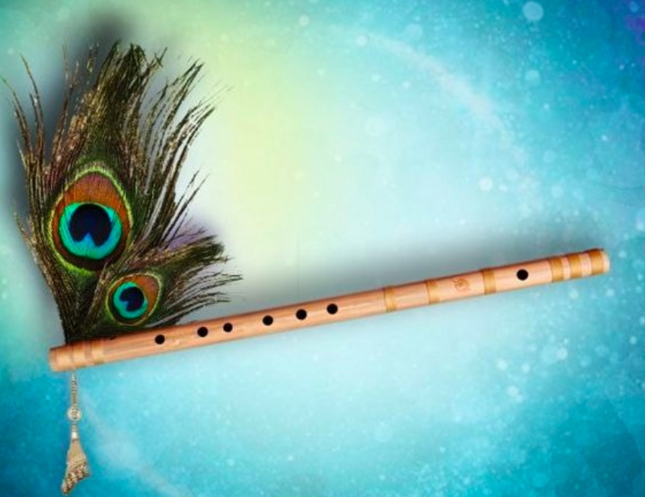

The ten parent scales
(Western scale names are simply to show
which notes are flat/sharp in each scale
while keeping the tonic at C.)
What is Raga?
Ragas are derived from scales, so let's begin by trying to understand what a scale is.
An octave has 12 notes. A scale is a musical theme created by choosing a specific set of notes from within these 12 notes. Think of the 12 notes in an octave as 12 different colors. Now, what if you chose only a few of those twelve colors for a painting? Say you choose violet, blue, green, yellow and orange. You could create an endless number of beautiful paintings with this color scheme. Every time you paint with it, the result could be something different. And yet, all of those paintings would share a certain recognizable quality, and they would stand apart from paintings based on other color schemes. And that is how it is with a scale.
The idea of scales is actually quite fundamental to all music. The music of ancient Greece was based on modes, which are similar to scales. In Western music today, you have major, minor, pentatonic, jazz, blues, and other scales. The video below uses a keyboard to show the ten parent scales in Indian classical music.
How is a Raga Different from a Scale?
A scale is just a prescribed set of notes. So long as you use only those notes, you can combine them in any way you want. A raga is a bit more specific. Within the framework of the scale, the ascending and descending scales (aaroh and avroh) are defined separately. This makes it possible to get many ragas from each scale. Here are a few examples of ragas derived from the Kafi and Asavari scales.
One scale many ragas
The structure of the ascending & descending scales in a raga (& other factors discussed further below) open up certain natural pathways for its melody to flow. This gives each raga a distinctive chalan (literally "flow" or "drift"). The video below uses the examples of Raag Bhimpalasi and Raag Bageshree (both Kafi scale ragas) to show how the chalan of a raga is affected by its ascending and descending scales. Because of their very different chalans, Raag Bhimpalasi and Raag Bageshree sound nothing like each other despite sharing the exact same set of notes in total.
Illustrating chalan – the flow of a raga
So, as we've seen, the ascending and descending scales of a raga determine its chalan to a large extent, but they are not solely responsible for it. There are other elements that also contribute to each raga's unique identity and melody profile.
The remarkable difference between Raag Bhimpalasi and Raag Bageshree despite sharing the same set of notes is due to their different origins. Many ragas have evolved from local musical traditions in various parts of India. Sometimes the same set of notes may be used in two different cultures, but the treatment of those notes is so different that they result in very different ragas.
Meanwhile, Raag Bhimpalasi and Raag Dhani share the same origin. This makes them fundamentally quite similar to each other. Even so, the two ragas have distinct identities because they have drifted apart over time and absorbed various influences along the way. The video below illustrates the other important elements that contribute to a raga's chalan and identity by comparing these two similar yet different ragas.
The defining elements of a raga
The Defining Elements of a Raga
Let's take a slightly more detailed look at the concepts illustrated in the previous section.
Aroh & avroh
The first things you learn about a raga are its ascending aaroh and descending avroh scales. The aaroh and avroh greatly influence how musical phrases in a raga are structured. If a note is skipped in the ascending scale of a raga, musical phrases in that raga will reflect this by always skipping that note in ascending sequences.
For instance, the note Re (2) is skipped in the ascending scale in both Raag Bhimpalasi and Raag Dhani illustrated above. So, you would never find the ascending sequence "Sa Re ga" (1 2 ♭3) in either of these ragas. However, you could find "Sa Re 'ni" (1 2 ♭7̣) because Re is part of the descending sequence here – Sa, Re 'ni (1, 2 ♭7̣).
Ornamentation
In addition to the notes used, the ornamentation of those notes also sets one raga apart from another. Grace notes, glides, and other ornamentation used are all quite different in Bhimpalasi and Dhani, with the result that even very similar musical phrases can sound different in the two ragas.
Focal points – vadi & samvadi
All ragas have what is called a "vadi" note, which stands out above the others as the most prominent note in that raga. This is the note that seems to wrap the raga around itself. Artists will come back to this note time and again and use it in many ways.
Bhimpalasi and Dhani both come from an older raga called Dhanashree. Dhanashree had Pa (5) as its vadi, so Pa continues to be a very strong note in Bhimpalasi and Dhani too. But artists have begun to shift the focus in Bhimpalasi to ma (4) because that gives it a more poignant quality. As for Dhani, it may have absorbed the influence of the rustic Raag Pilu in becoming more ga(♭3)-centric.
The vadi has a counterpart called samvadi. The two are usually set about half an octave apart – they have a Sa-Pa (1-5) or Sa-ma (1-4) relationship. The samvadi is not as important as the vadi, but it is the focal point in its region of the octave. So between the vadi and samvadi, there are two focal points for balance. Additionally, the samvadi can mirror some of the note patterns of the vadi, lending a pleasing sense of symmetry.
Deergha (elongated) and alpa (weak) notes
Notes that tend to be elongated are called deergha. Such notes have a strong presence in the raga. For example, Re (2) and Dha (6) are deergha in Raag Bhimpalasi, which gives them a strong presence despite being used only used in descending sequences.
By contrast, Dha is absent in Dhani, and Re is used infrequently and without emphasis. This gives Re a weak presence in Dhani, making it an alpa note in this raga.
Nyasa (landing notes)
Depending on the raga, musical phrases can end or land pleasingly on certain notes (called nyasa) more than on others. For instance, phrases in Bhimpalasi end satisfyingly on Sa, ga, ma, and Pa (1, ♭3, 4, 5), but not on Re, Dha, or ni (2, 6, ♭7). Meanwhile, phrases in Dhani end nicely on Sa, ga, and Pa (1, ♭3, 5), but not on Re, ma, or ni (2, 4, ♭7).
Raga Classification Systems
There are hundreds of ragas, and they can be classified in various ways – by structure, by parent scale, by family, by time or season, by mood, and so on. The seasons and moods ascribed to ragas are more subjective, but classifying by structure, scale, or family helps to get a better understanding of ragas from different perspectives.
Raga Classification by Structure (jaati)
Ragas are classified by structure based on the number of notes in their ascending and descending scales. Also, many ragas use different variants of the same note on the way up and down. Taking both the above into consideration, I like to think of ragas as being symmetric or asymmetric. Additionally, in terms of raga structure, we also have circuitous ragas, mixed ragas, and compound ragas.
Raga Classification by Scale (thaat)
Another way of classifying ragas is under the ten parent scales (called thaat). For instance, ragas that use flat ga and ni (♭3 & ♭7) and are classified under the Kafi scale, ragas that use flat re and dha (♭2 & ♭6) are classified under the Bhairav scale, and so on.
Raga Classification by Family (raagang)
A lot of ragas have been created from other ragas, giving rise to entire families (called "raagang"). The family-based classification system groups ragas based on their shared origins and melody profiles.
Difficult Ragas
Some ragas are more difficult than others. This could be because they involve difficult note intervals, or because they have convoluted chalans, because they use microtones, because they are dangerously close to other ragas and require skill to keep separate, and so on.
Let us meet agin in another lesson, Till then Happy Fluting!!
